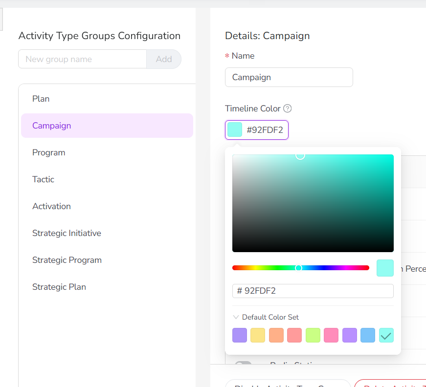
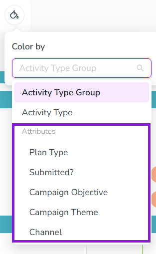
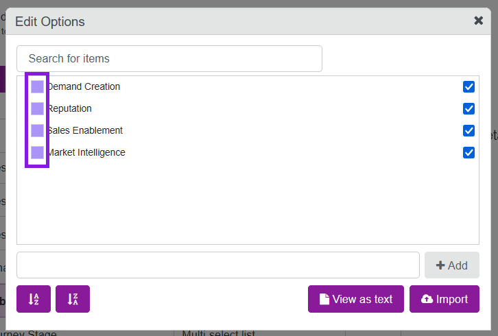
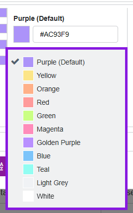
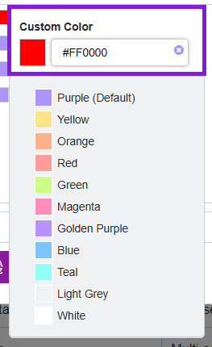

Configure Timeline activity color-coding
As an administrator, you can optionally set up color-coding for activity bars in the Timeline display mode. Color-coding makes it easier for users to identify activities at a glance.
There are two methods for color-coding activity bars:
By activity type or type group: Color-codes the activity bars according to the activity type group or individual activity type they belong to. Color-coding by activity type group is applied to the Timeline display mode by default.
By attribute value: Color-codes the activity bars based on the value set on an activity for a user-selected attribute.
Set up color-coding by activity type or type group
You can set a Timeline Color for each activity type group, and for each activity type (grouped and ungrouped).
Activity type group colors are used as the default for all activities of types in that group, while activity type-specific colors apply when  Select Color-Coding is set to Activity Type. Activity types with no Timeline Color set inherit their group's color, or fall back to the system default (purple) if no Timeline Color is set on the group.
Select Color-Coding is set to Activity Type. Activity types with no Timeline Color set inherit their group's color, or fall back to the system default (purple) if no Timeline Color is set on the group.
Set the Timeline Color for an activity type or activity type group
In the
 Activities section, click
Activities section, click  Settings to open the Activity Configuration page.
Settings to open the Activity Configuration page.Click Activities > Types & Groups.
In the list of activity types and groups, click the activity type group or activity type for which you want to set a Timeline Color.
In the settings for the selected activity type group, click the Timeline Color setting to open the color picker.
In the color picker, select the color you want to use to represent activities of the selected type or type group on the Timeline. You can:
Use the color picker controls to choose a specific color and shade
Type a hex code into the text field
Click on a preset color from the default color set

After you have chosen a color, click Save Changes. Your changes take effect immediately.
Optional: Repeat steps 3-5 to set Timeline Colors for other type groups or types.
{kind=link}
The Timeline Colors you selected are used on the Timeline whenever the  Select Color-Coding setting is set to the Activity Type Group or Activity Type options (depending on where you have set Timeline Colors).
Select Color-Coding setting is set to the Activity Type Group or Activity Type options (depending on where you have set Timeline Colors).
Set up color-coding for an attribute
You can set up color-coding for any Drop-Down List attribute by assigning a color to each of the attribute's values.
After you have configured an attribute for color-coding, that attribute becomes available as an option in the  Select Color-Coding > Color by menu on the Timeline:
Select Color-Coding > Color by menu on the Timeline:
{kind=link}

When users select an attribute from this menu, the activity bars are color-coded according to the value set on the activity for the selected attribute, using the value's specified color. For more details, see Color-code Timeline activity bars.
Set up color-coding for Drop-Down List attribute
In the
Activities section, click Settings to open the Activity Configuration page.On the Activity Configuration page, the Attribute Definitions section should be displayed by default.
If you're on a different page, click Attributes > Attribute Definitions in the navigation menu.
In the list of attribute definitions, click the Drop-Down List attribute for which you want to set up color-coding. The attribute's Attribute Details panel is displayed.
In the Attribute Details panel, click Edit Options. The Edit Options dialog opens.
To set the color for an attribute option, click the colored square by the option's name to open the color picker panel:

Use the color picker panel to choose a color for the selected attribute:
Click on any of the color presets to select that color:

Optional: To specify a custom color, type the hex code for the color you want into the text field:

Click anywhere outside the color picker panel to save your color choice for the selected option.
Repeat steps 5 to 7 to set colors for the other attribute options.
When you are finished, click
 Close on the Edit Options dialog to exit.
Close on the Edit Options dialog to exit.
You have set up color-coding for this attribute. The attribute now appears as a selectable option in the  Select Color-Coding > Color by menu on the Timeline.
Select Color-Coding > Color by menu on the Timeline.